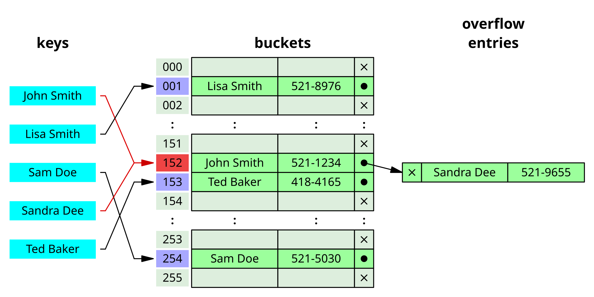
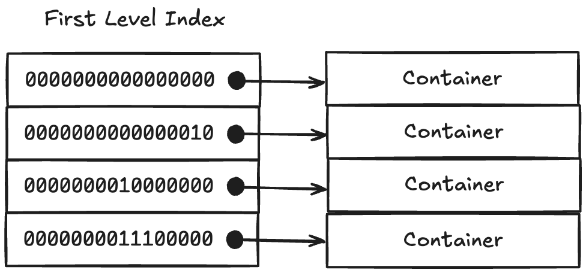
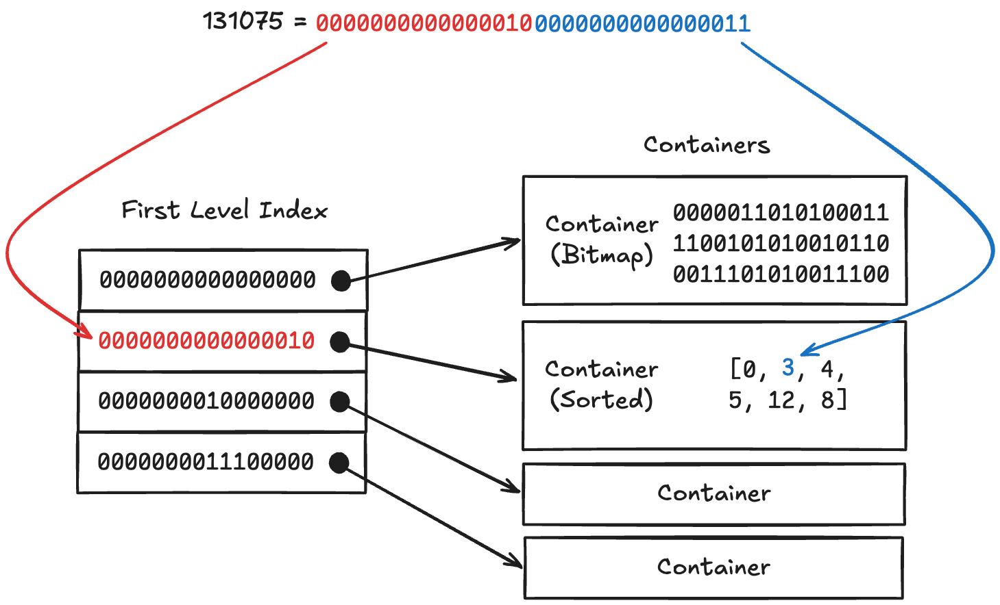

참고한 것들
어흥

- Bitmap 이 정수 집합 연산을 빠르게 해주니까 좋기는 한데, 몇가지 문제점이 있다.
- 집합의 원소가 적으면 (이를 Sparse 하다고 한다) 좀 비효율적이다.
- 만약 내가 집합에 하나의 정수 8,388,608 () 를 추가했다고 해보자.
- 이게 집합이 아니라 배열이라면, 그냥 정수 하나만 추가하는 것이기에 4byte 의 공간만을 차지한다.
- 하지만, bitmap 에서는 이거 하나를 위해 개의 bit, 즉 1MiB 의 공간이 필요하다.
- Bitmap 의 사이즈가 커졌을 때, 이것을 압축하여 사이즈를 줄이고 싶은데 지금까지 제안된 압축 방법들은 bitmap 이 제공하는 빠른 연산을 포기해야만 했다.
- 집합의 원소가 적으면 (이를 Sparse 하다고 한다) 좀 비효율적이다.
- 그때! 혜성같이 등장한 놈이 이것이다; Roaring Bitmap 은 정수 집합을 나타내는 bitmap 이긴 한데, “압축” 되면서 동시에 빠른 연산의 강점을 잃지 않는, 그야말로 최적화된 bitmap 이다.
- 이놈은 Better bitmap performance with Roaring bitmaps 란 논문에서 처음으로 제안되었고
- Consistently faster and smaller compressed bitmaps with Roaring 란 논문에서 여러 집합 연산들을 최적화했다.
- 근데 신기하게도 Lemire 교수님 이 모두 관여되어 있다. 쌉고수인듯
- 각 언어별 라이브러리는 깃허브 에 올라와 있다.
- 그럼 이제 이 Roaring Bitmap 이 어떻게 생겼는지 보자.
Structure
정수 집합
- Bitmap 은 “정수 집합” 을 나타내기 위한 “표현법” 이다. 따라서 이 Roaring Bitmap 도 “정수 집합의 표현” 으로 간주하면 이해하기가 한결 수월하다.
Roaring Bitmap vs Hash Table
- Roaring Bitmap 의 top-level overview 는 hash table 과 유사하다.

출처: 위키피디아 Hash Table
- Hash table 를 이용해 “Key” 로 “Value” 를 찾는 것은 다음과 같이 정리할 수 있다.
- “Key” 로 “Hash” 를 계산하고,
- 그것을 “Bucket” array 의 index 로 하여 특정 entry 로 접근하여,
- 그 안에서 올바른 “Value” 를 찾는 식으로 진행되는 것.
- 이때, Roaring Bitmap 은 다음과 같은 hash table 이라고 할 수 있다:
- “Key”: 어떤 정수
- “Value”: 그 정수가 정수 집합 내에 존재하는지 아닌지에 대한 boolean 값
- “Hash”: 그 정수의 상위 16bit (16 most significant bits, 이제부터는 이것을 16 MSB 라고 부르자.)
- “Bucket” 의 각 entry: 그 정수의 하위 16bit 를 담는 Container (이게 뭔지는 뒤에 나온다.)
- 물론 근데 Hash Table 과 Roaring Bitmap 은 큰 틀에서는 유사하지만, 실제 작동 방식은 차이가 있다. 이제 이것을 하나하나 알아보자.
“Bucket”: First-level index

- Roaring Bitmap 에서 Hash table 에서 “Bucket” array 에 대응되는 놈은 First-level Index 라고 할 수 있다.
- 다만, Hash table 은 “Hash” 를 index 로 하여 배열의 원하는 원소를 찾아가는 방식이었다면,
- Roaring Bitmap 은 16 MSB 들을 sorted array 에 넣어 binary search 로 찾는 방식이다.
- 이때의 sorted array 를 First-level Index 라고 부르는 것.
- First-level Index 의 각 entry 에는 Container 를 가리키는 pointer 가 있어 여기에서 하위 16비트에 대한 무언가를 하게 된다.
- 즉, C++ 문법으로 나타내면 대략 이렇게 표현할 수 있는 것.
struct FirstLevelIndexEntry {
uint16_t _msb;
Container* _container;
};
std::vector<FirstLevelIndexEntry> first_level_index;Container

- 위에서도 잠깐씩 언급했지만, Container 는 어떤 정수의 하위 16bit 를 담는 자료구조이다.
- 따라서 16 MSB 가 같은 정수들은 같은 Container 에 담긴다.
- 근데 왜 16 MSB 일까? 여기에는 나름의 장점이 있다.
- 32bit 정수에서, 16 MSB 는 First-level Index 에, 나머지 하위 16bit 는 Container 에 담기게 된다.
- 그럼 Container 에 담길 수 있는 최대는 이다.
- 그런데 근래의 CPU 들의 L1 캐시의 크기는, 서버, PC, 모바일 기기 등등을 모두 고려해 봐도, 는 넘는다.
- 보통 이고, 작아도 는 된다.
- 따라서 이 Container 는 가장 사이즈가 작은 L1 캐시에도 통째로 (심지어 여러개도 가능) 들어가 연산될 수 있다. 이것은 cache replacement 와 같은 overhead 에서 자유롭게 해준다.
- 근데 이놈은 어떤 자료구조일까? Roaring Bitmap 에서 Container 의 핵심은 어떤 고정된 작동 방식이 아닌, 세 가지의 종류가 있고, heuristic 에 따라 어떤 Container 의 형태가 바뀐다는 것이다.
Type 1: Sorted Array Container
- 맨 처음에 Container 가 생성되면, 이 Sorted Array Container 형태가 된다.
- 이름에서 알 수 있듯이, 여기에는 16bit 정수들이 정렬되게 된다.
- 즉, 일반
set자료구조가 되는 것.
- 즉, 일반
- 그리고 cardinality (즉, unique value count) 가 4096 이 되면, Bitmap Container 로 변경된다.
- 이는 위 에서 말한 문제점을 해결하기 위해서이다.
- 즉, 집합이 Sparse 한 상태라면, 그냥
set자료형을 쓰는 경우가 더 메모리 사용량이 적을 수도 있기 때문인 것.
- 따라서 이 Container 에는 정수값들을 담을 공간에 추가적으로, cardinality 를 추적할 counter 가 하나 포함된다. C++ 코드로 표현하자면 이런식임:
원본 Java 코드
struct SortedArrayContainer : public Container {
uint16_t _cardinality;
std::vector<uint16_t> _content;
};- 위의 예제 코드에서 사용한
std::vector자료구조처럼, 실제로도 저content는 가변길이를 가진다.- 내용물이 많아져 더 큰 capacity 가 필요하면, 더 큰 메모리 공간을 할당받은 다음에 내용물을 복사하는 과정을 거친다.
- 하지만 위에서 말한것처럼 cardinality limit 이 4096 이기 때문에, 계속 capacity 를 늘리지는 않고, capacity 가 작을 때는 (< 64) 2배씩 증가시키다가, 중간 정도의 크기 (64 ≤ cap < 1067) 에서는 1.5배, 큰 크기 (≥ 1057) 일때는 1.25배씩 증가시킨다.
- 일반 32bit 정수에서 16 MSB 가 날라간 16bit 정수들을 담고 있기 떄문에, Sorted Packed Array Container 라고 부르기도 한다.
Type 2: Bitmap Container
- Sorted Array Container 에서 cardinality 가 커지게 되면, 그때부터는 일반 bitmap 으로 바뀐다.
- 즉, 번째 bit 로 정수 의 존재 유무를 표시하는 방식이 된다.
- 이 bitmap 은 64bit 배열로 표현된다.
- 이 지점에서 Sorted Array Container 와 헷갈릴 수 있다. 어차피 둘 다 내부적으로는 배열이 들어가니까.
- 근데 Bitmap Container 의 배열은 “BigInt” 의 개념으로 이해하는 것이 좋다.
- 즉, 개의 정수의 존재 유무를 표현하는 bitmap 을 위해서는 의 정수가 필요한데,
uint65536_t따위는 없기 때문.
- 여기서도 Sorted Array Container 와 같이 cardinality 를 세는 counter 가 포함된다.
- 이 counter 값은 bitmap 에서 1 인 bit 의 수와 같다.
- 이것을 세는 것은 아주 값비싼 연산이긴 하지만, 요즘은 CPU instruction 중에 bit counter 가 있어서 (가령 x86 의
popcnt) 빠르게 수행할 수 있다고 한다.
- 따라서 C++ 로 표현해 보면:
원본 Java 코드
struct BitmapContainer : public Container {
uint16_t _cardinality;
std::array<uint64_t, 1024> _bitmap;
};- 예시 코드에서도 확인할 수 있듯이,
bitmap을 위해서는 가 모두 필요하기 때문에 여기서는 가변크기가 아닌 고정크기 (std::array와 같이) 배열을 사용한다.
Type 3: Run Container
- Run Container 가 뭘까? 아이디어는 RLE 와 유사하다고 생각하면 된다.
- 즉, 연속된 정수들이 있을때 “시작 값” 과 “길이” 두개의 tuple 로서 저장하는 방법이다.
- 하지만 이 RLE 를 이용한 집합의 표현은 데이터의 사이즈는 크게 줄어들지만, 집합 연산의 성능은 꽤 나빠진다는 것이 알려져 있다.
- 따라서 위의 Sorted Array 와 Bitmap container 가 가장 기초가 되는 type 이고, 이 Run Container 는 “특별한 상황” 이 아니면 생성되지 않는다.
- 이 “특별한 상황” 에는:
- 사용자가 “명시적으로”
runOptimizeAPI 를 호출했을 때 - 연속된 많은 값들이 insert 되었을 때
- 사용자가 “명시적으로”
- 근데 이때에도 무조건 바뀌는 것이 아닌, Run Container 로 변경했을 때 더 데이터의 사이즈가 줄어드는지 확인한 다음에 변경하게 된다.
- 이 확인 작업을 어떻게 하는지는 일단 생략한다. 다만 Bitmap Container 에 대해서만 아래에 tip 으로 남겨놓는다.
Bitmap Container 에서의
runOptimize당위성 판단
- Bitmap 에서는 Run Container 로 바꿀 수 있는지 없는지 판단하기 위해 run 의 개수를 센다.
- 근데 이때 꽤 기발한 bitwise operation 이 들어간다: 연속된 bit 가 1이라면, 그것은 run 을 의미하기 때문에 bitmap 을 1만큼만 shift 한 다음에 exclude 연산을 하면 run 시작지점만 1이 된다. 그럼 이 1 만
popcnt같은 instruction 으로 세면 되는 것.- 가령 다음의 bitmap 을 보자.
C = 000111101111001011111011111000001
- 이놈은 보면 6개의 run 이 있다. 이놈을 1 만 왼쪽으로 shift 해보자.
C << 1 = 001111011110010111110111110000010
- 그리고
C << 1에서C를 exclude 한다.- 이것은 bitwise operator 중에서
ANDNOT에 해당한다. 즉, bit 를 비교했을 때 왼쪽 인자의 bit 중 오른쪽 인자의 bit 가 1인 놈들만 0으로 만든다.C = 000111101111001011111011111000001 C << 1 = 001111011110010111110111110000010 (C << 1) ANDNOT C = 001000010000010100000100000000010
- 그리고 이때 1의 개수를 세면 기가막히게 6이 나옴을 알 수 있다.
Operation
- Run Container 는 제외하고, Sorted Array Container 와 Bitmap Container 에 대해서만 집합 연산을 어떻게 수행하는지 알아보자.
insert()
- 일단 공통적으로 16 MSB 를 잘라서 First-level Index 로 접근해 해당 container 를 찾는다.
- 그리고는 남은 하위 16bit 정수에 대해, 각 container type 에 따라 다르게 작업한다:
- Sorted Array Container: 그냥 배열에 16bit 정수를 정렬하여 추가한다.
- Bitmap Container: bitmap 에서 (16bit 정수) 번째 bit 를 1로 만든다.
exist()
- 마찬가지로,
- 일단 공통적으로 16 MSB 를 잘라서 First-level Index 로 접근해 해당 container 를 찾는다.
- 그리고는 남은 하위 16bit 정수에 대해, 각 container type 에 따라 다르게 작업한다:
- Sorted Array Container: 배열이 정렬되어 있기에, binary search 로 값을 찾는다.
- Bitmap Container: bitmap 에서 (16bit 정수) 번째 bit 이 1인지 확인한다.
intersect()
- Roaring bitmap 2 개를 교집합하는 것은, 같은 16 MSB 를 가지는 container 끼리의 교집합과 같다.
- 왜냐면 First-level Index entry 가 한쪽에만 있다는 뜻은 다른 한쪽에는 해당 16 MSB 를 가지는 정수가 집합에 하나도 포함되어 있지 않다는 뜻이기 때문.
- 따라서 container 종류별로 어떻게 연산을 하면 되는지만 알면 된다.
- :
- 일반 bitmap 과 동일하다. 그냥 bitwise
AND연산을 하면 된다. - 이때, 결과의 cardinality 가 4096 보다 크냐 작냐를 이용해 이것을 Sorted Array 로 만들던지, 아니면 Bitmap 으로 만들던지 하면 된다.
- 일반 bitmap 과 동일하다. 그냥 bitwise
- :
- 얘는 어쩔 수 없다. Sorted Array 를 순회하며 Bitmap 에 이놈이 있냐 없냐를 체크해야 한다.
- 근데 주목할 것은 이놈의 결과는 “항상” Sorted Array 가 된다. Intersect 를 했을 때 결과의 cardinality 가 4096 보다 커질 일은 없기 때문.
- :
- 얘는 각자의 cardinality 에 따라 다른 방식을 사용한다.
- 어떤 것을 선택할 지는 heuristic 으로 결정한다.
- 어떤 선택지가 있는지는 생략; Two pointer merge 가 한 선택지이다.
- :
union()
- Intersect 에서와 유사하게, container 끼리의 합집합 연산만 고려하면 된다.
- Intersect 에서와 유사한 이유로, 16 MSB 에 대한 container 가 한쪽에만 있으면 그놈은 고대로 포함되기에 그냥 deepcopy 만 해주면 된다.
- 그럼 container 끼리의 비교는 어떻게 할까?
- :
- 일반 bitmap 과 동일하다. 그냥 bitwise
OR연산을 하면 된다. - 그리고 cardinality 는 항상 Bitmap 의 것을 따라간다. 즉, 결과 container 의 type 은 무조건 Bitmap 이다.
- 일반 bitmap 과 동일하다. 그냥 bitwise
- :
- 얘도 어쩔 수 없이 Sorted Array 를 순회하며 Bitmap 에의 bit 를 1로 바꿔줘야 한다.
- 이때에도 cardinality 는 항상 Bitmap 의 것을 따라가기에, 결과는 Bitmap Container type 이다.
- :
- 그냥 Two pointer merge 를 수행하긴 하는데,
- 만약 두놈의 cardinality 합이 4096 보다 작으면 결과의 cardinality 는 절대로 4096 을 넘지 못할 것이다.
- 따라서 이때는 Sorted Array Container 가 결과로 나온다.
- 하지만 그렇지 않다면, 일단 결과는 Bitmap Container 일 것이라고 “가정” 한다. (Optimistic prediction)
- 그리고 union 이후 cardinality 를 계산해 4096 보다 작으면 그제서야 Sorted Array Container 로 변환한다.
- :